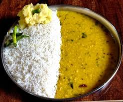

Dal Bhat

Dal Bhat is cooked by the combination of rice and lentils or dal!
Dal Bhat is a traditional meal of the Indian subcontinent.
It consists of steamed rice and a cooked lentil or other pulses stew called dal.
Ingredients
- Rice
- Water
- Garam Masala
- Dal
Steps
- Cook the rice. Get it steamed
- Cook your Dal. Add spices according to your taste like Garam Masala, Laal Mirch Powder etc.
- Wait for a few minutes
- Once both the rice and dal are ready, mix them together and enjoy your meal! You can stuff on top of it like
coriander leaves, pickles to further enhance its taste and aroma.